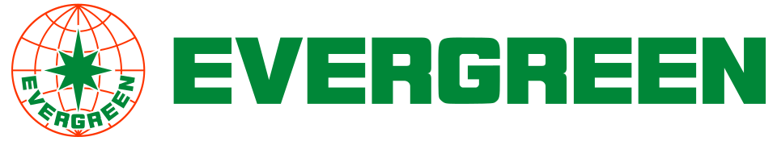

에버그린 해운 Evergreen Marine
에버그린 해운(Evergreen Marine)은 대만 타오위안시 루주구에 본사를 둔 컨테이너 운송·해운 회사이다. 에버그린 그룹에 속하며 150척이 넘는 컨테이너선을 보유한다.
최종 업데이트

에버그린 해운은 어떤 브랜드인가
에버그린 해운은 전 세계 약 80개국의 240개 항구에 기항하는 대만의 컨테이너 해운 회사이다. 2023년 기준 해운업계에서 7번째로 큰 회사였다.
주요 항로는 동아시아와 북미·중미·카리브해, 동아시아와 지중해·북유럽, 유럽과 북미 동부 해안, 동아시아와 호주를 잇는다. 동아시아에서 동아프리카·남아프리카와 남미로 가는 항로, 페르시아만과 홍해를 연결하는 아시아 역내 항로도 운영한다.
해운 외에 컨테이너와 선박 건조, 항만 관리, 엔지니어링, 부동산 개발 활동도 한다. 컨테이너 대부분은 초록색 바탕에 흰 글씨로 Evergreen이 적혀 있고, 냉동 컨테이너는 흰 바탕에 초록 글씨로 색을 반대로 쓴다.
에버그린 해운은 어떻게 시작되고 성장했나
1968년 9월 1일 Yung-Fa Chang이 설립했다. 화물선 Central Trust 한 척으로 어디든 가는 서비스를 시작했고, 1969년 두 번째 선박을 추가해 중동 항로에 투입했다.
1970년대에 선박을 늘리며 동아시아와 중미 항로를 더했고, 1974년 Evergreen Marine Corporation (New York) Ltd.를 세워 미국 서비스를 시작했다. 1981년 모회사는 Evergreen International S.A.로 이름을 바꿨고, 1984년 첫 세계 일주 해운 서비스를 시작했다.
이후 1984년 Uniglory Marine Corp.(Taiwan), 1993년 Italia Marittima, 2002년 Hatsu Marine Ltd.(U.K.)를 더해 규모를 넓혔다.
에버그린 해운의 브랜드 아이덴티티는 무엇인가
초록색 컨테이너를 쓰는 대만 에버그린 그룹 소속 해운사이다. 약 80개국 240개 항구에 기항하는 항로망을 운영한다.
에버그린 해운의 대표 제품과 서비스는 무엇인가
사업은 컨테이너 운송을 중심으로 한다. 컨테이너와 선박 건조, 항만 관리, 엔지니어링, 부동산 개발도 활동에 포함된다.
계열사와 부문으로 Uniglory Marine Corp.(Taiwan), Evergreen UK Ltd.(UK), Italia Marittima S.p.A.(Italy)가 있다. Uniglory는 1999년 회사의 한 부문이 되었고, 그 컨테이너는 같은 방식으로 칠하되 밝은 주황색이다.
2007년 Hatsu Marine Ltd., Italia Marittima S.p.A., Evergreen Marine Corp., Evergreen Marine은 공통 명칭 Evergreen Line을 채택했다.
에버그린 해운은 지금 어떤 상태인가
2023년 기준 해운업계 7위 규모이며 150척이 넘는 컨테이너선을 보유한다. 에버그린 그룹에 속한 운송 계열 회사이고, EVA Airways, Uni Air와 협력 관계에 있다.
2021년 3월 23일 Ever Given이 수에즈 운하에서 멈춰 약 일주일 가까이 전 세계 해운에 큰 차질이 생겼다. 2022년 3월 13일에는 Ever Forward가 체서피크만에서 좌초했다가 4월 17일 다시 물에 떠올랐다.
에버그린 해운 로고는 어떻게 변해왔나
자주 묻는 질문
에버그린 해운는 어느 나라 브랜드인가요?
에버그린 해운는 대만의 모빌리티 브랜드입니다.
에버그린 해운는 언제 설립되었나요?
에버그린 해운는 1968년 설립되었습니다.
에버그린 해운의 브랜드 아이덴티티는 무엇인가요?
초록색 컨테이너를 쓰는 대만 에버그린 그룹 소속 해운사이다.
에버그린 해운의 대표 제품은 무엇인가요?
사업은 컨테이너 운송을 중심으로 한다.
에버그린 해운는 현재 어떤 상태인가요?
2023년 기준 해운업계 7위 규모이며 150척이 넘는 컨테이너선을 보유한다.
에버그린 해운의 창업자는 누구인가요?
에버그린 해운의 창업자는 Chang Yung-fa입니다(위키데이터 기준).
에버그린 해운의 본사는 어디에 있나요?
에버그린 해운의 본사는 루주 향에 있습니다(위키데이터 기준).
출처와 검증
에버그린 해운 관련 참고: 공식 웹사이트 · 위키데이터 Q706946 · 한국어 위키백과 · 영어 위키백과. 브랜드명은 한글과 원어를 함께 표기하되 데이터에 없는 표기는 만들지 않습니다. 기원 국가·설립연도는 검수된 정의문에서 확인된 값을 우선하고, 없을 때만 공식 웹사이트 URL이 일치하는 위키데이터 개체의 값을 씁니다. 위키데이터 값은 2026-11-12 기준입니다.